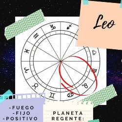
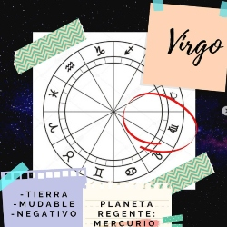
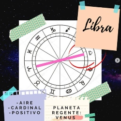
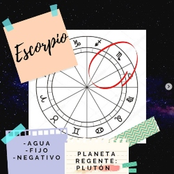
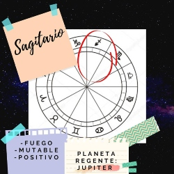
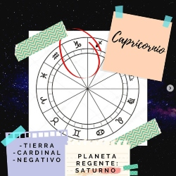
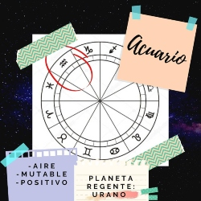
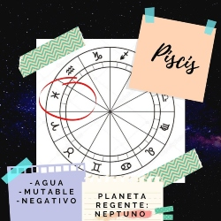

Info de Color
Aries

El camino evolutivo de la energía no podría arrancar de otra forma si no es con este carnero de fuego. Imagínense un Universo donde no existe nada, solo hay oscuridad. Hay que tener mucha fuerza para irrumpir en lo desconocido. Hay que tener coraje para abrirse paso hacia la nada misma. Sigan imaginando ese Universo vacío, y de la nada, una explosión liberando energía. Esa explosión es Aries. Es una energía que tiene que abrir paso, abrir un nuevo camino. Es una energía que solo busca experimentar su deseo. Su deseo de ser. Aries ES. No hay una referencia para tener autoconciencia porque solo existe su deseo de ser. ARIES ES EL MUNDO DE LA ENERGÍA ♈ • Vitalidad • Capacidad de acción • Impulso • Potencia • Coraje • Ser • Explosión • Libertad • Inocencia • Espontaneo • No es energía reflexiva • Intuitivo • Decisión ➡️ También es una energía que se puede mostrar de la siguiente forma: • Agresividad • Violencia • Intolerancia • Impaciencia • Competencia
Tauro

El camino evolutivo de la energía tiene una lógica secuencial. Una pregunta que puede colaborar con esta lógica es: ¿Qué pasaría si un signo se eternizara?. Entonces, para desarrollar el concepto de Tauro tendríamos que pensar: ¿Què pasaría si Aries continuara su movimiento? Si eso sucediera habría mucha energía disponible en el sistema pero sin destino de objeto, sin transformación. Ahora profundicemos un poco más la lógica secuencial. Aries, siendo un movimiento expansivo debería sucederle uno de contracción, de absorción. La fase de Tauro absorbe y solidifica toda esa energía liberada de Aries para materializarla. El potente impulso ariano se inserta en la materialidad taurina. La fase de Tauro ralentiza la potencia de Aries. Es un movimiento de procesos lentos, una persona taurina necesita mucho tiempo para procesar y tomar una decisión. En esta fase donde la energía se vuelve materia, los sentidos están en su máxima potencia, por eso también la velocidad es baja. Es un movimiento muy perceptivo, donde el afuera no está discriminado y es una prolongación de sí mismo. En esta fase hay un principio de inercia de la acumulación y es por eso que Tauro es un signo fijo. Sostiene, perdura, mantiene y acentúa. Siguiendo esta línea de pensamiento, también podemos decir que es una fase donde se resiste al cambio. ♉¿Cómo van a ser las personas que desplieguen la energía de Tauro?♉ Van a ser personas de procesos lentos ,muy perceptivas, atentas y tranquilas. Son personas muy conectadas con sus sentidos y su cuerpo. Si tienen algún conocido de Tauro, fíjense cuánto disfrutan de comer, de la naturaleza, de dormir. Van a ser personas acumulativas en cuanto a lo emocional, que quizás, pueda derivar en personas posesivas. El aprendizaje será el desapego. Siendo un signo de tierra, se puede encontrar mucha perseverancia y solidez. En este sentido, también vamos a encontrar una resistencia al cambio. Para una persona taurina, sería ideal que todo se mantenga en su lugar para siempre. El incentivo será fundamental, ya que a falta de èste, puede aparecer el sedentarismo recordemos que es una fase donde la energía se ralentiza.
Géminis

Seguimos con el camino evolutivo!💫 Venimos de la fase de Tauro, en donde la energía liberada en la fase de Aries, se materializó. ¿Qué pasa si se eterniza ese movimiento taurino? Nos quedaríamos en lo meramente material, sin la posibilidad de crear algo nuevo. Géminis viene a dispersar todo lo condensado en Tauro. Dispersa para volver a conectar y que surjan nuevas combinaciones. No por nada Géminis es la tercera fase del sistema zodiacal. El número tres simboliza el vinculo. La fase número 1 representa el mundo de energía, lo creativo (Aries), la fase número 2 representa el mundo de la materia, lo receptivo (Tauro) y la fase número 3 representa el vinculo entre ambos (Géminis). Siguiendo esa línea de pensamiento, podemos decir que no existe lo autónomo que después se relaciona. El número 3 siempre va a contener al número 1 (lo creativo). Yo (3) soy hija de mi papá (1) y de mi mamá (2), y ellos a su vez cada uno son hijos de sus padres y asi sucesivamente. Somos productos de combinaciones. El movimiento geminiano es el de conectar, vincular, hacer puente, generar canales de comunicación. Todo el tiempo esta abriendo y uniendo, abriendo y uniendo. Es inestable porque nunca cierra, continuamente esta combinando. A nivel psicológico, se vincula esta fase a la función de pensamiento, a la capacidad de establecer relaciones lógicas, explicar, jugar. Lo principal en esta fase son los procesos asociativos. Géminis, como signo mudable, es una transición en lo que se fijo en la fase anterior y lo que va a arrancar en la fase posterior. Es un movimiento de reorganización de la energía.
Cáncer
.jpg)
¡Llegamos a la base del Zodíaco! Y no podía ser de otra forma si no es con este primer signo de agua. Venimos de la rapidez de Géminis, donde no hay momento para parar la pelota porque constantemente está en movimiento comunicando información. ¿Qué pasaría si se eterniza este movimiento? No hay posibilidad para profundizar. Cáncer viene a ofrecernos eso: aislar y proteger para que surjan relaciones estables y poder profundizar para que nazca una forma. La fase Cáncer es el mundo de la forma. Las almas encarnan en Cáncer. El clan, la familia, es Cáncer. Lo cardinal de este signo es que hay una desición de aislar. Y cuando uno aísla, excluye. Los elementos excluídos se van a retomar en Escorpio. En esta fase del Zodíaco, toda la atención está puesta en el mundo interno y como consecuencia aparece el psiquismo y la identidad. Identidad por pertenencia a un clan y no por autoconciencia. Cáncer como primer signo de agua nos trae el primer afecto, el materno. Es la sensibilidad maternal de proteger, cuidar y gestar. De reunir y excluir. De resguardar y recortar. Preparando lo fijo del siguiente signo. ♋ Cómo van a ser las personas que encarnen la energía de Cáncer ?👫 • Protectoras • Sectarias • Vulnerables • Nostálgicas • Sensibles • Familieras • Susceptibles • Sobreprotectoras - Tendencia infantil - Dificultad para comunicarse
Leo
Como vimos en el posteo de Cáncer, se protegió y se gestó un proceso del cual surgió una forma. Esa forma en la fase de Leo toma conciencia de sí misma. Si Cáncer construye un borde para proteger el proceso, Leo se diferencia gestando su identidad (nacimiento del Yo). Una identidad no por pertenencia, sino por autoconciencia. El movimiento leonino es generar un centro que irradie hacia una periferia para que la periferia le devuelva el estimulo y lo potencie. Es un feed-back constante. Proclamo mi diferencia, y luego, necesito que el entorno confirme mi identidad. Es la primera vez que en el Zodíaco se repite un elemento. El primer signo de fuego es Aries, liberación de energía que sólo busca experimentarse. En Leo, como segundo signo de fuego, nace la autoconciencia y la necesidad de proclamarse. En Aries, yo soy. En Leo, yo soy yo. El signo de Leo se expresa con un enorme poder creativo, se manifiesta con mucha potencia y tiene un borde definido que le otorga una clara sensación de sí. El gran paso para Leo será desapegarse de esa imagen que construyó con el afuera para que surja la verdadera esencia. ♌¿Cómo van a ser las personas que desplieguen la energía leonina?♌ • Creativas • Gran facilidad para diferenciarse del resto • Organizativas – cuando llega Leo las cosas se organizan porque va a intentar liderar. • Sinceras • Narcisistas • Soberbias – “me diferencio porque tengo algo que los demás no tienen” • Magnetismo capaz de movilizar al otro • Apasionados • Pensamiento en función de la acción • Sintéticas ➡️ Función etérea: expresión de la esencia, autoexpresión. ➡️Fase evolutiva: Nacimiento del “Yo” – Identidad ➡️Signo: Fuego – Fijo – Positivo ➡️Planeta regente: Sol ➡️Rige en el cuerpo: Corazón
Virgo
Hoy vamos a intentar desarrollar la energía de Virgo. A partir de esta fase, el Zodíaco se complica un poco más y va a ser mucho más difícil darnos cuenta, profundamente, de qué se trata la energía. Pero antes de profundizar Virgo, vamos a hacer un repaso del camino evolutivo de la energía: • Aries♈ --------- Explosión - liberación de energía. • Tauro♉ -------- Se materializa la energía. • Géminis♊ ------ Vinculación de descargas – Infinitas variaciones de la materia. • Cáncer♋ ------- Se protege y se excluye un proceso para que surja la forma (Forma humana) • Leo♌ ----------- Esa forma toma conciencia de sí. Identidad. Nacimiento del Yo. Bien, ahora tenemos un mundo con formas independientes y autoconcientes, y lo más lógico (para nuestra estructura psíquica) sería seguir en ese pensamiento lineal y que cada forma siga perfeccionandose.Pero lo maravilloso del Zodíaco es que no es lineal, sino mandálico. En Virgo, la energía da un giro y rompe con lo lineal de nuestro pensamiento. ¿Cómo? ¿No sigo perfeccionándome? Y acá Virgo aparece para que nos demos cuenta que somos partes funcionales de un sistema más amplio que nos antecede. Lo importante en Virgo no es la identidad, sino lo funcional al sistema y por eso de esta energía deriva lo servicial. Acá el Ego se corre a un lado y lo importante es que el sistema funcione con todas sus partes. Y las partes, con el Todo. Es por eso que a partir de Virgo, a nuestra estructura psíquica Cáncer – Leo (pertenencia-identidad) le va a costar comprender las energías. Lo que aparece en Virgo es la noción de que hay un orden infinitamente más amplio y que excede completamente a lo humano. La imagen mas representativa de Virgo es la Tabla de Mendeléyev. Cuando Dmitri Mendeléyev coloco en esa tabla todos los elementos conocidos de su época, dejo lugares vacíos porque sabia que en algún momento esos elementos iban a emerger. La matriz ordenadora ya los implicaba, solo había que esperar a que emerjan.
Libra
El grado 0 de #Libra inaugura la otredad, teniendo en el polo opuesto el grado 0 de #Aries. Se completa el primer hemiciclo, en el cual la energía: se liberó, se condensó, se dispersó, se generó una forma, esa forma tomó conciencia de sí y del sistema que le antecede. En Libra se inaugura la percepción de oposición, que da cuenta de uno de los principios de circulación de energía: la bipolaridad. La percepción de la realidad es una oscilación constante de bipolaridades donde el equilibrio es efímero. Hay una unión natural de las cosas, donde hay una acción siempre hay una reacción. La percepción de la realidad ya no es un orden mental, si no que es poder ser sensibles a una lógica activa de la existencia según la cual todo es complementario. A la persona libriana le va a costar saber quién es porque su deseo oscila con el deseo de los demás. Genera identidad a partir de un otro, y ésto para una estructura psíquica #Cáncer (pertenencia) – #Leo (identidad) es un problema: ¿Cómo mi identidad está a merced de un otro? Es por eso que a partir del signo de #Virgo, nos va a costar muchísimo entender el #Zodíaco. ♎¿Cómo serán las características psicológicas de una persona que despliegue la energía de Libra?♎ 🔹️Busca la armonía de los polos. 🔹️Gran registro de un otro distinto que lo constituye . 🔹️Seducción: siempre trata de tener la atención de un otro porque eso es lo que los define. 🔹️Histeria: está constantemente seduciendo, atenta al deseo de los demás, sin saber lo que quiere. 🔹️Indecisión: posarse en uno de los platillos de la balanza hace que se pierda el equilibrio, es por eso que nunca se decide por nada, para no perder el equilibrio. 🔹️Melancolía: los momentos de equilibrio son efímeros y tiende a tener la sensación de pérdida de los instantes felices. 🔹️Le va a costar definir su identidad ya que tiene identidad vincular. 🔹️Es estética 🔹️Es una persona que crea un campo energético agradable para que los otros también puedan abrirse. ➡️Función etérea: oscilar y sostener el equilibrio entre dos polos existentes. ➡️Fase evolutiva: de las partes del sistema, la energía se posa direccionalmente doble dando lugar al vínculo interpersonal. ➡️Signo: Aire – Cardinal – Positivo. ➡️Planeta regente: Venus.
Escorpio
Si pensamos en #Escorpio se nos viene inmediatamente a la cabeza algo turbio y oscuro. No? En parte, este signo remite a eso pero estamos dejando afuera toda la potencia creativa que tiene. Recapitulando un poco, en #Libra vimos la danza de los opuestos complementarios. En Escorpio esos polos se intensifican. En esta fase aparece todo lo que la conciencia excluyó en #Cáncer para resguardase y que pueda surgir una forma y, luego, una identidad. ¿Qué fue lo que se excluyó? La muerte, la sexualidad, la pulsión. Escorpio es todo ésto.Es el encuentro de la #conciencia y el #inconsciente. Como gran signo de agua, va a las profundidades más oscuras para remover toda la basura que esta debajo y poder resurgir. Escorpio esta representado por el Caduceo. Dos serpientes enfrentadas que nacen desde un mismo punto. La muerte y la vida mirándose cara a cara. Ambas me constituyen. La muerte es necesaria para la liberación de energía y que pueda surgir una nueva forma.La muerte y la sexualidad como potencias creativas. Escorpio es un signo de mucha potencia y poder, pero como en todas las energías que vimos, hay que ver cómo se hace uso de ese poder. En lo más bajo de esta energía vamos a encontrar a personas manipuladoras y controladoras. ¿Por qué? Porque como surgen en una sociedad donde la muerte, la sexualidad y la pulsión no son aceptadas del todo, van a saber controlarse para poder encajar. Y como sé controlarme, también puedo controlar a los demás. En lo más sutil de esta energía, vamos a encontrar a personas sanadoras. Por ejemplo, el psicólogo es una energía escorpiana. Es una persona que esta en contacto con el dolor, sabe lo que es el dolor, y brinda herramientas para que una persona pueda salir de esa situación. En este signo podemos encontrar 3 niveles de energía: 1º- No hacerme cargo de mi oscuridad, entonces me transformo en una persona oscura. 2º- Lucha constante de polaridades. Vida o muerte. 3º- Acepto mi oscuridad, y como sé de dolor, puedo ayudar a otros. ♏¿Cómo van a ser las personas que desplieguen la energía de Escorpio?♏ -Apasionadas -Misteriosas -Reservadas -Espirituales En lo más bajo de esta energía podemos encontrar personas: -manipuladoras - hirientes - controladoras Y vos, ¿Cómo desplegas tu energía?💫
Sagitario
Para poder comprender y entender cada signo en particular, es necesario remontarse a la fase anterior. ¿Qué paso en #Escorpio? En esta fase aparece todo lo que excluyó la psiquis, se encuentran los caminos de la conciencia y el insconciente, se intensifican los opuestos, nadamos en las profundidades del océano más oscuro para resurgir como el Ave Fenix. En #Sagitario, seguimos oscilando entre dos polos pero hay una dirección de resolución. Eso es lo que marca la flecha sagitariana. El centauro simboliza los tres niveles de la realidad: el caballo hace referencia a la creatividad de la Tierra, el jinete remite a la creatividad de la conciencia y la flecha simboliza la creatividad del Cielo. En la fase de Sagitario el conflicto de Escorpio fue trascendido.Es el resultado de un proceso en el que dos tendencias contrapuestas terminan alquimizadas. La conciencia integra ambas polaridades, la luz y la sombra son la cara de la misma moneda. Es una energía de sensación de abundancia, vitalidad, profunda confianza en el proceso y entrega infinita. Piensen que venimos de las profundidades más oscuras de Escorpio. ¿Qué nos queda en esta fase? Gozar y confiar en el proceso, confiar en la vida. El gran conflicto sagitariano es que, psicológicamente, esa flecha simboliza un ideal y no un nivel de la realidad. Por lo general , las personas sagitarianas van a tender a confíar en alguna idea que le de sentido a sus vidas. La diferencia entre Escorpio y Sagitario, es que el escorpión se queda aferrado al sufrimiento y no confía en el proceso de la vida. Cuando algo muere, se libera energía para que surja lo nuevo. Sagitario, en cambio, integra el dolor y confía en la abundancia de la vida. El sistema psicológico sagitariano es tener una ideología que le permita trascender cualquier angustia. Por eso vamos a encontrar personas idealistas con creencias sostenedoras (religión). ♐¿Cómo van a ser las personas que desplieguen la energía de Sagitario?♐ • Idealistas. • Viajeras – entendiendo el viaje como modo de expansión de la conciencia. • Optimistas. • Negadoras – tienden olvidar a Escorpio. • Fanáticas Por acá hay un Ascendente en Sagitario🙋♀️ ¿Y por ahí?💫
Capricornio
Para entender un poco la energía de Capricornio es necesario analizar su símbolo. Es un jeroglífico que, entre tantas otras cosas, representa una cabra con cola de saurio. La cola de saurio representa lo que viene desde las profundidades y que, en la cabra, llega hasta la cima de la montaña. Capricornio reabsorbe (signo negativo) lo más esencial de todas las experiencias de las fases anteriores y la forma, que apareció en Cancer, llega a su máxima expresión. La energía capricorniana, como fase cardinal, es un pasaje de dimensión en el que lo importante no es lo concreto si no la esencia. En otro plano, Capricornio es la energía de la ley, la esencia donde están las leyes de la realidad, las leyes de la naturaleza, lo que realmente ES. El deseo que se liberó en Aries llega a ser ley. No hay contraposición entre el deseo de la parte y la ley del Todo, porque la parte comprendió que es “parte del todo”. Otro factor fundamental de esta energía es la conciencia del tiempo y la presencia del tiempo como constitutivo de los hechos y de la realidad. El tiempo genera/muestra la ley. Para Capricornio todo es proceso, hay placer del esfuerzo, se postergan los placeres inmediatos porque el logro representa el éxtasis. ♑¿Cómo van a ser las personas que desplieguen la energía de Capricornio?♑ - Sostenedoras. - Metódicas. - Disciplinadas. - Responsables. - Superyo - Deber ser. - Hipermaduros – Capricornio es una energía vieja que acumula experiencia. - Perseverantes - Planificadoras ¿Hay algún capricorniano por ahí?🙋♀️
Acuario
Para entender un poco la energía de #Acuario, es necesario remontarnos a la fase anterior. En #Capricornio, la forma que se inició en #Cáncer llegó a su máxima expresión. Un ejemplo sería: “Nací en una familia, me independice, tome conciencia que soy parte de un sistema, logré mi objetivo de recibirme, trabajar y comprarme una casa” ¿Y ahora qué queda? Y ahí es donde viene esta energía acuariana a invitarnos a saltar al vacío. A dejar toda forma, romper las estructuras, para darle paso a lo nuevo que no está definido: el futuro. Capricornio está representado por Cronos el dios del tiempo, ese tiempo en Acuario se disuelve dándole paso a la simultaneidad, que en el pensamiento junguiano, se asocia a la sincronicidad. La sincronicidad se postula como una red de conexiones acausales. No porque no se pueda identificar una cadena causal, sino porque lo percibido centralmente va mas allá de ella. Acuario es la visión de la realidad como energía, el sujeto como energía. Profundamente, Acuario es la percepción de que los doce signos son necesarios, de las dos diferencias son la Totalidad y la Creatividad. En esta línea de pensamiento, en Acuario cede la fantasía de que haya una parte absoluta, sino que Acuario ve una red de energía, en la cual el sujeto es una manifestación de la misma que lo hace a través de formas. La paradoja de este signo es que es energía esencialmente grupal, y al mismo tiempo, es energía de absoluta independencia y libertad. Acuario no puede ser sin grupo, sino que siempre es conexión, siempre es red, siempre es encuentro. Psicológicamente, esta será la gran tensión de cualquier persona de Acuario: el anhelo de encuentro y comunidad, y la sensación de ser absolutamente diferente a todos los demás. El modo de pensar de la persona de Acuario es por insight, no hay procesos, sino que son clics discontinuos. Acuario es el signo creativo por excelencia. Los procesos mentales no son históricos ni están basados en la memoria, sino que están abiertos y para adelante. Es un signo de Aire, las emociones no son su territorio, su tendencia básica es la desconexión. Hay distintos tipos de acuarianos: por ejemplo, se puede encontrar al acuariano que se dedica a algo que esté relacionado con la humanidad, pero de un modo abstracto, hacia al futuro. Otro tipo de acuariano puede ser el rebelde, el marginal, que constantemente cuestiona las instituciones, cuestiona formas y que quiere cambiarlo todo. También podemos encontrar al acuariano “adaptado”, con rasgos generales de ser muy servicial, muy generoso, muy sociables, de muchísima entrega al otro. Y vos, ¿Tenes mucho Acuario en tu carta? ¿Te sentís identificado?
Piscis
En la fase de Aries hay una explosión de energía, una liberación de energía. En Cáncer esa energía encarna en una forma, con bordes y límites, excluyendo todo aquello que la perturba. En Capricornio esa forma llega a su apogeo, llega a su esencia. En Acuario se pierde la forma y se pasa a la visión de la realidad como energía. ¿Qué pasa en la fase de Piscis? Hay un movimiento de retorno, somos la energía misma que baja por el mandala zodiacal. Si Acuario era la conciencia de que somos formas de energía, en Piscis somos energía pura. En este signo no hay bordes, no hay límites, no hay discriminación, no hay sensación de separación.La energía de Piscis es super porosa, cada acción externa la percibe con mucha sensibilidad. Psicológicamente será muy complicado para las personas piscianas tener una identidad. Es una energía que no tiene bordes y está lejos de las energías que forman el psiquismo, la identidad, el Yo. Piscis, con su tremenda sensibilidad, capta muchísima información.No se trata de información mental (Géminis), sino información de otros planos. Para que se den una idea, piensen en las fotos polaroid: el papel esta en blanco, empieza a captar toda la luz del entorno y se convierte en foto. Con Piscis pasa justamente eso, son muy porosos y captan un montón de información. El gran problema es ver cómo decodifican toda esa información. Para las personas con este signo es muy importante hacer cosas con el cuerpo, les permite tener bordes y limites de los cuales carecen. En esta fase del camino evolutivo de la energía, la integración de las partes llega a su máximo acercamiento al todo, a una alquimia. Para cerrar con este signo, quiero citar una frase de Buda que simboliza esta energía: “No entraré al nirvana antes de que el último de los seres vivientes lo haya hecho.” Profundamente, de esto se trata Piscis: amor, empatía y resonancia.